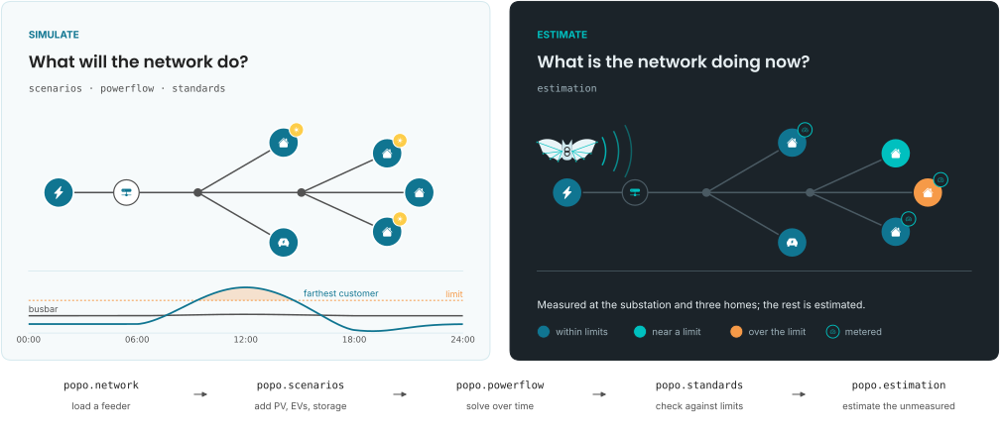

popo#
Simulate what a low-voltage network will do.
Estimate what it is doing.
pip install "popo-flow[all]"

Low-voltage networks are barely measured: a meter at the substation and little downstream, while the decisions that matter, how much solar or how many electric vehicles a feeder can take, depend on every customer's connection. popo simulates what a network would do under a given level of uptake, and reconstructs what it is doing from what little is metered.
Networks as Python, not as COM calls
Circuit reads a compiled OpenDSS circuit back
as records: lines, loads, transformers, PV and storage. Results come back as long
tables, one row per element and phase, with every bus labelled by the phase it is
actually on.
Time series with convergence reported
solve_time_series steps a feeder through real
profiles, records the substation and, optionally, every customer's voltage, and
returns how many steps did not converge, rather than leaving it to a log line.
DER uptake and mitigation
Attach real household, PV and EV profiles at a given penetration, each on its customer's own phase, sweep hosting capacity, and compare Volt-VAr, Volt-Watt and battery storage on the same customers.
DER & mitigationStandards, not bare numbers
EN 50160, ANSI C84.1, IEEE 1547 and EREC G99 as named
objects carrying their own rules. A verdict says why, violations says
where, and event_summary separates a brief touch from an afternoon
over the limit.
State estimation for unmeasured feeders
Convert a feeder to pandapower and check it against OpenDSS, count whether a measurement set can determine the state, and estimate every bus from the substation, smart meters and line sensors.
State estimationFigures and tables in one style
Schematic network diagrams drawn with icons and coloured by voltage status, publication line plots, and Great Tables in the same palette as every figure on this site.
Plottingpopo is Swahili for bat, and a companion to twiga, Swahili for giraffe. twiga sees far, forecasting ahead in time; popo sees in the dark, inferring the state of a network that is not measured.